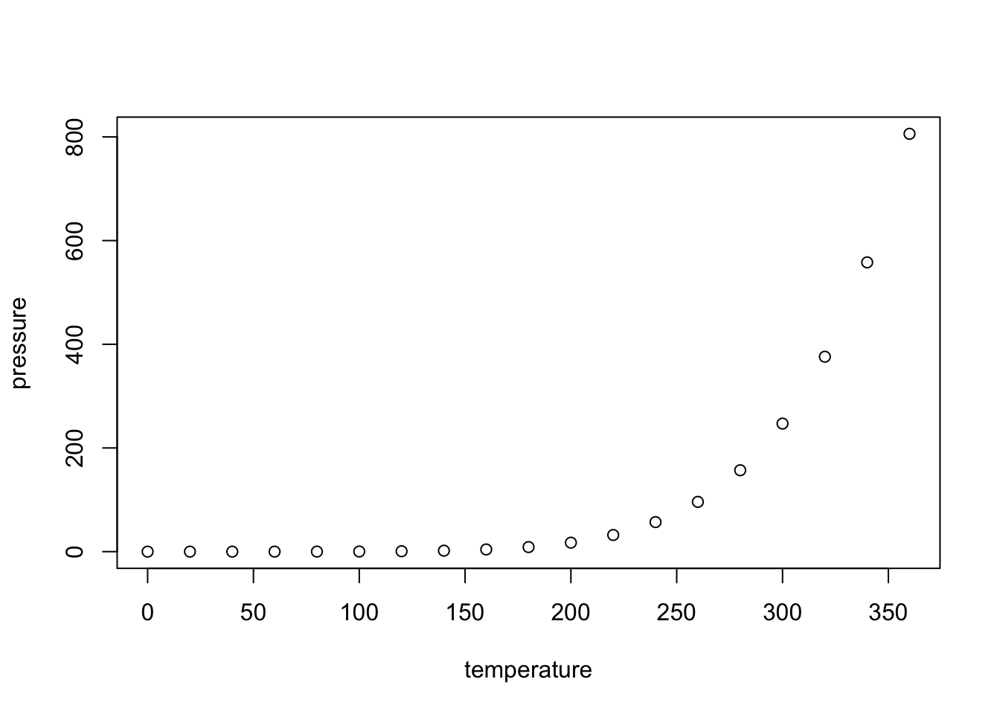

Chapter1 Background
1.1 Tennis Datasets
As mentioned in the introduction, there is a large amount of historical tennis data freely available. Tennis websites such as atpworldtour.com and tennis.data.co.uk provide most comprehensive access to information about players, the outcomes of matches and statistics of certain matches. Other important sources that include historical datasets (as CSV) of ATP Tennis Rankings, Results, and Stats are provided by Jeff Sackman and Daniel Korzekwa. A more complex dataset with a longer historical timespan and advanced metrics is provided by the OnCourt System. The present thesis uses the OnCourt Dataset, which includes statistics of 17625 ATP tennis matches played between 2004-2018 and has results for over 500 thousand ATP matches played since the 1990’s. OnCourt dataset also contains further information such as tournament seeding, tournament round, player age and length of match. OnCourt Dataset, which is in MDB format, is converted into a Sqlite3 database using MDB TOOLS. A Pyton script then extracts different information from Sqlite3 Database (tournaments, player names, statistics) and converts the data into Pandas Dataframe.1 The full list of statistics found in OnCourt dataset is omitted, as our model uses none of this additional information. The relevant statistics provided for each match can be seen in the figure below.
| OnCourt Match Statistics | |
|---|---|
| First Serve percentage | FS |
| Percentage of points won on first serve | WSP_1 |
| Percentage of points won on second serve | WSP_2 |
| Percentage of receiving points won | WRP |
| Double Faults | DF |
| Aces | ACES |
| Total Points Won | TPW |
| Break Points Won | BP |
| Total Break Points | TBP |
| Net Approaches | NA |
| Total Net Approaches | TNA |
1.2 Tennis Betting
There are two main categories of tennis betting: pre-play and in-play. The former is considered as a traditional form of betting, in which a bookmaker offers odds and accepting punters bet directly against the bookmakers. The second category can be played in betting exchanges such as Bet Fair, in which customers instead offer odds and place bets against each other. A unique option brought by exchanges, called lay betting, allows punters to oppose a selection, i.e. to bet against something happening. In this case, punters can play the role of a traditional bookmaker but offering odds to sell a bet instead of the usual odds to back a bet. In both categories it is possible to bet on a variety of factors, such as such as the winner of the match, the number total sets and the over/under of total number of games. Traditionally, research has focused on bets placed on the overall outcome prior to the match starting as it allows a more comprehensive evaluation of the performance of the generated model against the market. However, experts claim that over 80% of the overall money wagered on tennis matches is bet in-play, i.e., during the course of the match. Thus, instead of only focusing on pre-play, the present thesis attempts to use the model for both pre-play and in-play betting to see the true value of our model. Webb (2011). (Also https://www.dailymail.co.uk/sport/tennis/article-3405544/Tennis-gambling-market-second-football-bookmakers-boom-online-play-betting.html).
1.3 Review of Previous Work
The earliest attempts to the statistical analysis of tennis matches can be traced back to early 2000’s. S. Clarke & Dyte (2000) and Boulier & Stekler (1999) used a single feature, namely ATP computer tennis rankings, to predict a player’s chance of winning. The goal was to see whether the position of a tennis player in world rankings was related to his/her performance in an upcoming tournament. These early attempts fit a logistic regression model to the ATP ratings, to estimate the probability of winning as a function of the difference in rating points. Del Corral & Prieto-Rodriguez (2010) attempt to assess the degree to which the difference in ranking points is good indicators of the outcome of Grand Slam matches. More recently, Spanias & Knottenbelt (2013) claimed that the ATP ranking system is inaccurate at ranking players with rankings greater than 32, showing that ATP rankings perform much more poorly in this subset of matches with a success rate as low as 55%. Another problem is that there is only one ranking for the four surfaces, thus ranking system does not capture player strengths on different surfaces. More recent state-of-the-art tennis prediction models can be seen as a hierarchical/point model using Markov chains. These models take advantage of the fact that scoring system in tennis has a hierarchical structure, with a match being composed of sets, which are composed of games, which in turn are composed of individual points. Thus one can construct a hierarchical Markov model to estimate the match winning probabilities of both players by using only the probabilities of the two players winning points while serving. Using this singular statistic, one can deduce the probability of a player winning a single point, then a game, then a set, and finally the match, since the Markov chain will reflect the stochastic progression of the score in a game, as in 1.1. Hertzmann & Zorin (2001) Newton & Keller (2005) James (2008) used Markov chains to generate equivalent hierarchical expressions using the assumption that points are independent and identically distributed. Klaassen & Magnus (2003) later show that winning the previous point can have a positive influence on winning the current point, but still argue that the model is good approximatio since tnhe deviations from i.i.d. are small. Arguing that small deviations does not unjustify the i.i.d. assumption in forecasting, Barnett & Clarke (2005), Spanias & Knottenbelt (2013) and Newton & Keller (2005) focus in detail on the estimation of the respective probability of each player winning a point while serving. In order to calculate this probability, Barnett & Clarke (2005) attempt to mathematically combine the serving ability of the serving player against the returning ability of the returning player. In order to come up with these two numbers, Barnett & Clarke (2005)’s approach is to can look at historical service statistics of both players and average each player’s statistics. As explained in Spanias & Knottenbelt (2013), Barnett’s approach computes two statistics for each player \(f_{i} \textrm{ and } g_{i}\) reflecting their serving and receiving strengths against an average opponent respectively, where \(f_{i} \textrm{ and } g_{i}\) are computed as:2 \[\begin{equation} \label{eq:fi} {f_{i} = a_{i} b_{i} + (1 - a_{i})\ c_{i}} \end{equation}\begin{equation} \label{eq:gi} {g_{i} = a_{av} d_{i} + (1 - a_{v})\ e_{i}} \end{equation}\] In which, \[\begin{align*} {f_{i} = \text{proportion of points won on serve by player i}} \end{align*}\begin{align*} {g_{i} = \text{proportion of points won on return by player i}} \end{align*}\begin{align*} {a_{i} = \text{probability of successful first serve by player i}} \end{align*}\begin{align*} {a_{av} = \text{average probability of successful first serve (across all players)}} \end{align*}\begin{align*} {b_{i} = \text{proportion of own successful first serves won by player i}} \end{align*}\begin{align*} {c_{i} = \text{proportion of own second serves won by player i}} \end{align*}\begin{align*} {d_{i} = \text{proportion of first serves of opponent won on return by player i}} \end{align*}\begin{align*} {e_{i} = \text{proportion of second serves of opponent won on return by player i}} \end{align*}\]Figure 1.1: Markov Chain model of a Tennis Game. Taken from Sipko and Knottenbelt
Although mathematically sound, one can argue that this approach is far from perfect empirically. Even if is a good approximation; Barnett’s algorithm suffers from bias because players face different opponents of varying skill levels. Knottenbelt’s Common Opponent Model attempts to solve this flaw with Barnett’s algorithm. He adopts the way the serve-winning probabilities of players are calculated before being supplied to the Barnett formulas by only looking at the players’ performance against common opponents. The crucial point is that this version provides a fair basis of comparison between players by analysing match statistics for opponents that both players have encountered in the past. Knottenbelt claims that his common opponent hierarchical Markov model yields 3.8% ROI against the best odds offered by bookmakers for a data set of 2178 diverse tennis matches, but admits that the sample size is big enough to represent the average performance of the model.
Perhaps more importantly, the hierarchical Markov models do not take other important match statistics such as number of aces, double faults, total points won and second serve winning percentage, into account. Hence it is unrealistic to expect that these models can successfully capture important factors such as playing styles of players, fatigue and individual player strengths. Considering the availability of an immense amount of historical tennis data, recently several master theses have proposed machine learning models as an alternative to stochastic models described above. Somboonphokkaphan, Phimoltares, & Lursinsap (2009) train neural networks with basic features features, including previous head-to-head match outcomes and first serve percentage etc. The authors claim that the model has 75% accuracy for predicting matches in the 2007 and 2008 Grand Slam tournaments. Chen, Tian, & Zhong (2017) try support vector classification models (SVC) with linear, RBF and polynomial kernels, but the results of the thesis are inconclusive. A more comprehensive paper by Sipko (2015), whose thesis advisor was William Knottenbelt, uses the OnCourt dataset to train a Logistic Regression with interaction features and a Feed-Forward Neural Network Model.Sipko claims the neural network model generated a return on investment of 4.4% when betting on 6315 ATP matches in 2013-2014..3 Knottenbelt and Sipko use the above mentioned common opponent model to derive not only the proability of winning a point, but all the possible variables representing the qualities of two players, mentioned in Figure (Oncorut dataset). Sipko’s paper is significant not only because of the models it introduces, but also because the novel feature engineering methods it uses to extract tennis match features from raw historical data, characterizing the qualities of two players in the most representative way. The following thesis closely follows the novel feature engineering done by Sipko, which is explained in the next chapter.
1.4 Including plots
You can also embed plots. For example, here is a way to use the base R graphics package to produce a plot using the built-in pressure data set:

Note that the echo=FALSE parameter was added to the code chunk to prevent printing of the R code that generated the plot. There are plenty of other ways to add chunk options. More information is available at http://yihui.name/knitr/options/.
Another useful chunk option is the setting of cache=TRUE as you see here. If document rendering becomes time consuming due to long computations or plots that are expensive to generate you can use knitr caching to improve performance. Later in this file, you’ll see a way to reference plots created in R or external figures.
1.5 Loading and exploring data
Included in this template is a file called flights.csv. This file includes a subset of the larger dataset of information about all flights that departed from Seattle and Portland in 2014. More information about this dataset and its R package is available at http://github.com/ismayc/pnwflights14. This subset includes only Portland flights and only rows that were complete with no missing values. Merges were also done with the airports and airlines data sets in the pnwflights14 package to get more descriptive airport and airline names.
We can load in this data set using the following command:
flights <- read.csv("data/flights.csv")The data is now stored in the data frame called flights in R. To get a better feel for the variables included in this dataset we can use a variety of functions. Here we can see the dimensions (rows by columns) and also the names of the columns.
dim(flights)[1] 52808 16names(flights) [1] "month" "day" "dep_time" "dep_delay"
[5] "arr_time" "arr_delay" "carrier" "tailnum"
[9] "flight" "dest" "air_time" "distance"
[13] "hour" "minute" "carrier_name" "dest_name" Another good idea is to take a look at the dataset in table form. With this dataset having more than 50,000 rows, we won’t explicitly show the results of the command here. I recommend you enter the command into the Console after you have run the R chunks above to load the data into R.
View(flights)While not required, it is highly recommended you use the dplyr package to manipulate and summarize your data set as needed. It uses a syntax that is easy to understand using chaining operations. Below I’ve created a few examples of using dplyr to get information about the Portland flights in 2014. You will also see the use of the ggplot2 package, which produces beautiful, high-quality academic visuals.
We begin by checking to ensure that needed packages are installed and then we load them into our current working environment:
# List of packages required for this analysis
pkg <- c("dplyr", "ggplot2", "knitr", "bookdown", "devtools")
# Check if packages are not installed and assign the
# names of the packages not installed to the variable new.pkg
new.pkg <- pkg[!(pkg %in% installed.packages())]
# If there are any packages in the list that aren't installed,
# install them
if (length(new.pkg))
install.packages(new.pkg, repos = "http://cran.rstudio.com")
# Load packages (thesisdowndss will load all of the packages as well)
library(thesisdowndss)The example we show here does the following:
1.6 Additional resources
Markdown Cheatsheet - https://github.com/adam-p/markdown-here/wiki/Markdown-Cheatsheet
R Markdown Reference Guide - https://www.rstudio.com/wp-content/uploads/2015/03/rmarkdown-reference.pdf
dplyrDocumentation - http://dplyr.tidyverse.org/ggplot2Documentation - http://ggplot2.tidyverse.org/
Source Code can be found at akozlu Github↩
The following mathematical calculations are taken from Spanias & Knottenbelt (2013). Derivation of the formulas can be found at Barnett & Clarke (2005)↩
The C# source code for implementing Sipko’s paper can be found at Github↩